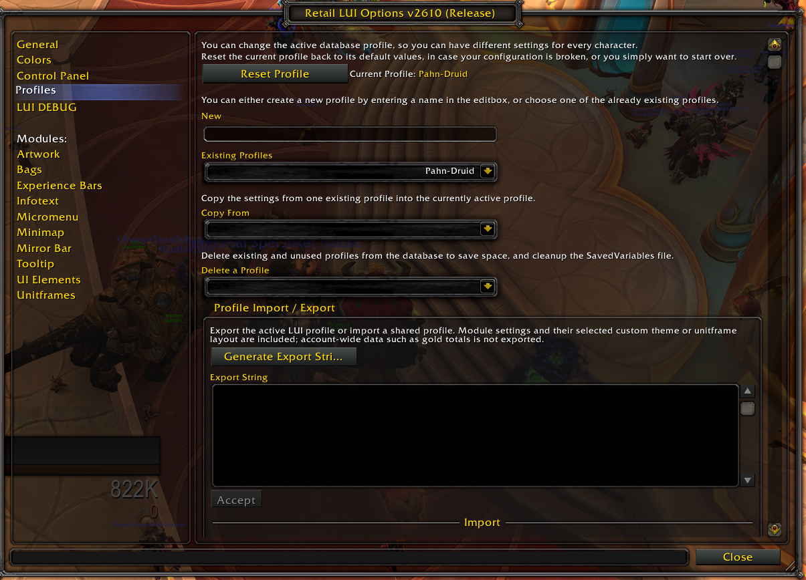
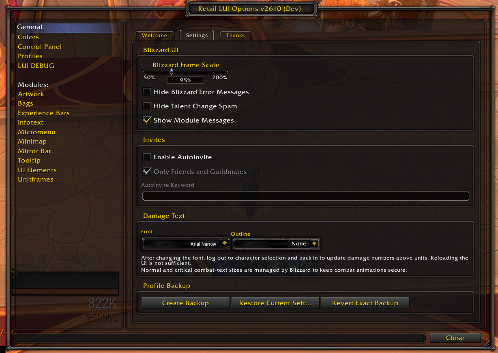
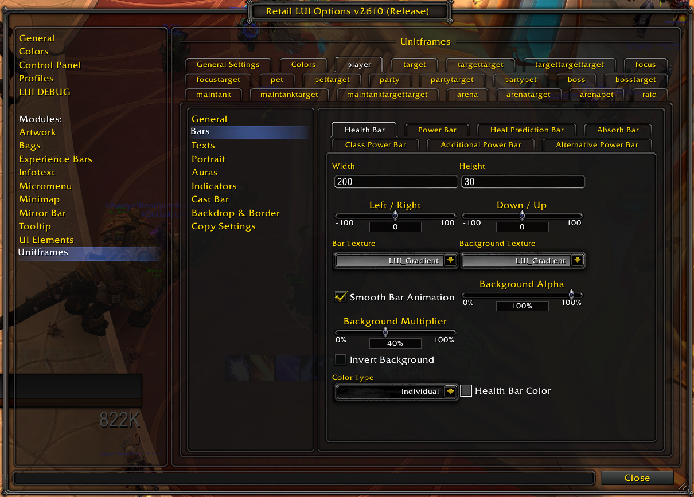
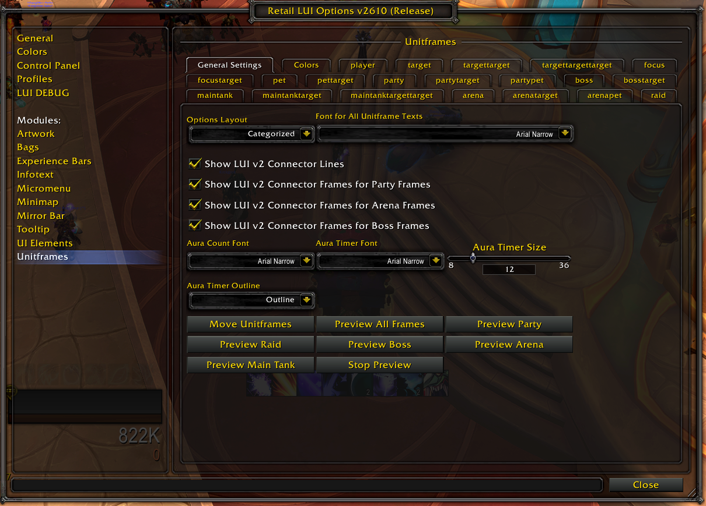
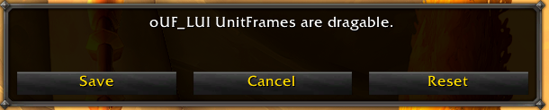
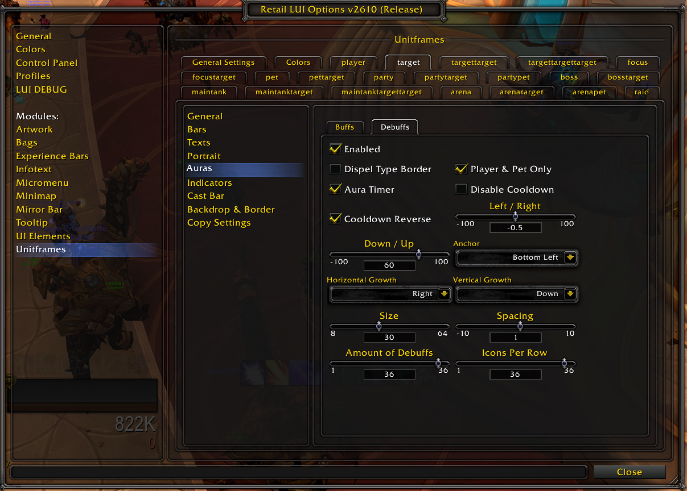
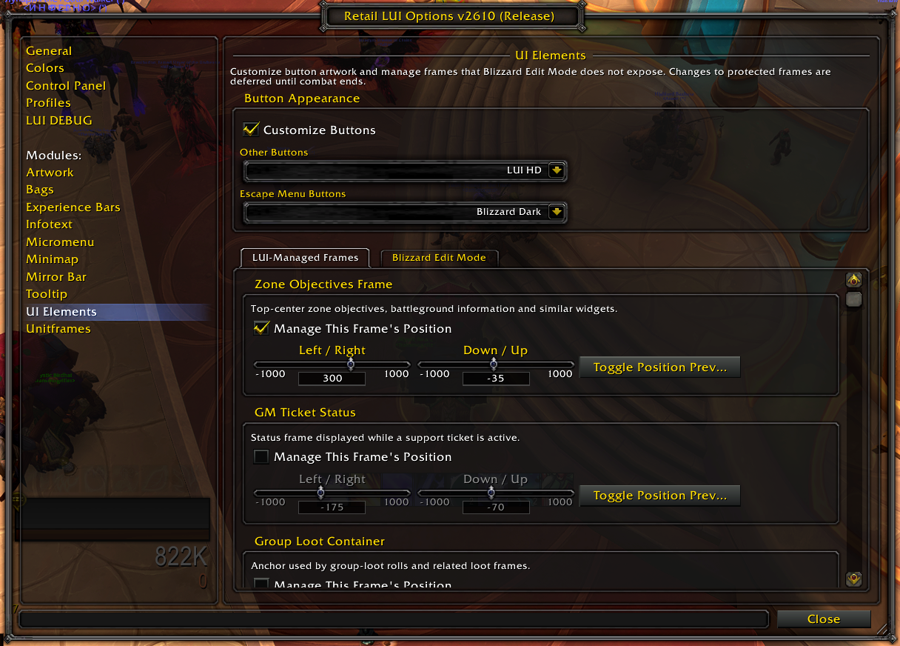
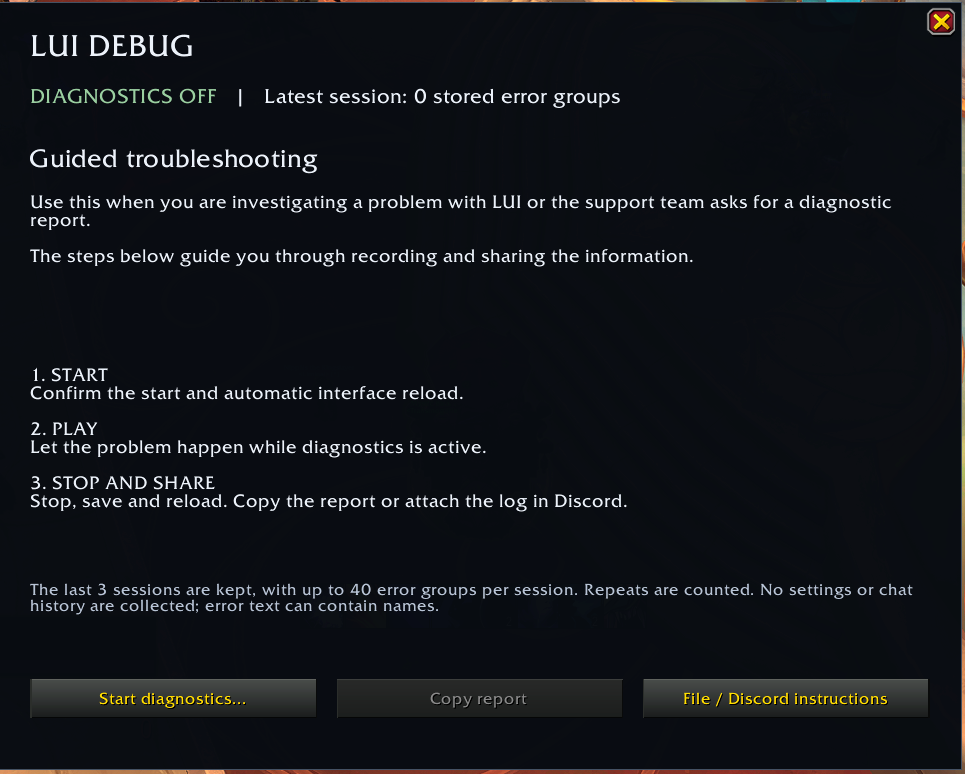

WORLD OF WARCRAFT
LUI
GUIDE
This guide covers LUI v2610 for Retail and Forever. It focuses on the settings most likely to cause questions. Available options depend on your client, class and enabled modules. You do not need to configure everything — start with the parts you actually use.
Useful Terms
A few terms appear throughout LUI. Knowing these makes the rest of the options much easier to understand.
Profile Sharing
Share setups under Profiles → Profile Import / Export. Use a new profile name when importing to keep your existing setup.

Understanding the Options Window
Open LUI by typing /lui in chat or by clicking the gear icon in the LUI Micromenu. The left side contains the main sections and modules.

Modules
Use Control Panel → Modules to enable the parts of LUI you want. Each module has its own page; the main areas are:
Combat-text fonts
Under General → Settings → Damage Text, choose the font for scrolling combat text and damage numbers above units. Outline affects scrolling text only.
Profile backup
Under General → Settings → Profile Backup, Create Backup saves the active profile. Restore Current Settings starts from current defaults and restores compatible backed-up values. Revert Exact Backup restores the backed-up values directly. These controls use the latest backup for that profile.
Compact vs. Categorized
Under Unitframes → General Settings → Options Layout, choose Compact for a flat list or Categorized to group settings by topic. This changes only the options menu, not your frames.

Unitframes
Select a Unitframes tab to configure that frame independently. Frame and bar widths have separate settings: changing the general frame width does not automatically resize every bar.

Shared fonts
Font for All Unitframe Texts also applies to aura timers and counts. Sizes and outlines stay unchanged; you can still override individual fonts afterwards.
Backdrop & Border
On each frame, Backdrop & Border controls the outer background, border, padding and insets. These are separate from the backgrounds inside health and resource bars. Aggro Glow lets the border change with threat status.
Copying settings between frames
Open the destination frame's Copy Settings page. Choose Copy From and a Section, then use Copy to [frame] and confirm. Include Sizes and Include Positions are off by default, so you can transfer the appearance while keeping those settings. Only settings supported by both frames are copied.
Moving Frames and Using Preview
Under Unitframes → General Settings, use Move Unitframes to drag frames into place. The preview controls show frames even when the corresponding units are absent. Individual frames also offer Preview This Frame; previews end on combat entry or profile changes.

Bars, Texts, Colors and Indicators
The available options depend on the frame you selected. Not every unitframe has every bar, text or indicator.
Bars
- Health / Power: control the main status bars and their size, texture and color behavior.
- Heal Prediction / Absorb: show incoming healing and absorb information where supported.
- Class / Additional Power: show resources supported by your class and client. Additional Power includes a separate mana bar for druids in bear or cat form; its Gradient follows mana. Alternative Power is a separate encounter resource where supported.
Backgrounds and colors
Background Alpha controls opacity; Background Multiplier controls brightness. They are independent. Unitframes → Colors contains shared palettes for classes, power types, health gradients and combat feedback. For one fixed bar or text color, select Individual in that element's Color Type.
Texts
Common text groups include Name Text, Health Text, Power Text, Health Percent Text, Absorb Text and Combat Feedback. Depending on the text, you can change font, size, outline, position, format and color behavior. Absorb text can use full or short values and hide zero values.
Player → Texts → Raid Group Text can show your raid subgroup on the player frame. Raid → Texts → Group Labels labels occupied groups beside the raid frames.
Indicators
Supported frames can show icons such as Leader, Role, Raid Marker, PvP, Resting, Combat and Ready Check. Indicator pages usually control whether the icon is enabled, its size and its position.
Hunters in Forever also have Pet → Indicators → Pet Happiness in Categorized mode, with its own enable, size and position settings.
Buffs and Debuffs
Buffs and Debuffs are configured separately for each supported unitframe.

After filtering, auras use Blizzard's expiration-time sorting. With the count limit set to 4, only the first four in that order are displayed. This does not select the four most important buffs or debuffs.
Cast Bars
Cast-bar settings are available on supported unitframes. Select the frame and open Cast Bar to enable and configure its bar. Frames such as Target of Target do not have their own cast-bar settings.
- Show Latency Safe Zone: marks network latency at the end of the player cast bar.
- Show Shielded Casts: shows casts that cannot be interrupted.
Under the frame's Shielded Cast Bar → Shield Icons, choose an icon on the left, right or both sides, then adjust its size and position. Shielded bar and border colors are optional overrides on the same page.
Preview Cast Bar shows a test cast, including shielded-cast appearance. A real cast replaces the preview. Stop Cast Bar Preview ends the castbar test and closes any frame opened only for it; Stop Preview under Unitframes → General Settings closes all previews.
Bags and Bank
Configure the bag window under Bags → Backpack Options. Disable Lock Frame to reposition it.
Sorting and layout
Fill Bags from Bottom changes the fill direction and immediately runs bag cleanup. With it off, bags fill from the top. Bag filters and reagent restrictions still apply. Newline After Bags starts a separate row for each bag.
Textures and colors
Bank and client differences
In Retail, Bags → Bank Options → Use LUI Bank optionally styles the character and Warband banks. It is off by default. The bank shares bag textures and item-quality colors, with its own row size, spacing, scale and Fill Bank from Bottom setting. Blizzard's tabs and item actions remain available.
Forever keeps its native bank window. Show Keyring Button adds a shortcut beside Clean Bags when Blizzard's keyring visibility setting is also enabled.
Experience Bars
Experience Bars shows available progress such as experience, reputation and honor. Retail also supports Azerite and House Favor when their requirements are met. The active bars depend on available tracker data.
Rested XP and text
Show Rested XP adds the rested reserve as a percentage before the normal XP text. That reserve can exceed 100% of a level.
The bar text, hover tooltip and blue rested area are independent. Hiding the text leaves the other two available.
Buttons and UI Elements
Buttons
Open UI Elements → Button Appearance and enable Customize Buttons. Choose the style for normal window buttons and the Escape menu independently. Button artwork is included in LUI; no separate Interface/Buttons folder is required.

Disabling Customize Buttons restores Blizzard artwork. Action-bar spell and macro buttons keep their own appearance; some other controls may also retain Blizzard artwork.
Moving additional frames
Under UI Elements → LUI-Managed Frames, choose a frame such as LFG Queue Eye, enable Manage This Frame's Position and adjust Left / Right and Down / Up. Toggle Position Preview helps position it without joining a queue.
Use UI Elements → Blizzard Edit Mode for the Objectives Tracker, Alternate Power/Encounter Bar, Durability Frame and Vehicle Seat Indicator.
Forever swing timer
When supported by the Forever client, Swing Timer (Forever) toggles Blizzard's native swing timer. Set its position, size and individual bar visibility in Blizzard Edit Mode. This switch changes a Blizzard setting independently of LUI profiles.
Tooltip and Infotext
Tooltip
Tooltip settings control visibility, position, scale, health display, textures and colors. With Anchor to Cursor enabled, fixed-position controls may be greyed out.
Tooltip Appearance separates background and border settings from the health bar and health text. Choose Individual in the relevant Color Type to use a custom health-bar or border color. Set Background Texture to None to choose a plain Background Color.
Infotext
Infotext provides small displays such as the clock, gold, Friends and Guild.
Most infotext entries have their own Enable toggle and position settings under Infotext → Individual Settings. Friends and Guild have separate hover-window appearance settings. Friends → Extra Window Width adds room for zone, realm or game-status text; 0 uses the automatic width.
Infotext → Global Settings contains the display and hover-window fonts. Top Bar Placement aligns and moves the top-bar infotexts together while retaining their individual positions. Additional choices, such as gold totals and character-data resets, are on the relevant Individual Settings page.
Under Individual Settings → Gold → Characters in Tooltip, show Alliance, Horde or both. This filters the character list; realm totals still include both factions. On supported clients, the tooltip also shows the Warband bank balance separately from character gold.
In Retail, Show Mythic+ Score adds a friend's score between the zone and note. It requires the separate Raider.IO addon and matching character data; missing data stays blank. Show Raider.IO Details on Hover adds character details. Battle.net broadcast messages can be confirmed with Enter.
Combat Restrictions
World of Warcraft protects some interface frames and actions during combat.
Leave combat and try again. Moving or previewing unitframes and importing a profile are intended for out-of-combat use. Some protected layout changes may also wait until combat ends.
Most settings apply directly. Follow reload prompts when shown; a manual reload is not needed after every change.
LUI DEBUG
Enable the bundled LUIDiagnostics addon, then open LUI DEBUG → Open LUI DEBUG or type /luidebug. Follow the instructions in the window.

Recording continues through reloads and logins until you stop it in LUI DEBUG.
Keep END OF REPORT when copying. Nothing is uploaded automatically.
General Lua errors require the separate !BugGrabber addon. Blocked-action events and Lua warnings can be recorded without it.
Troubleshooting
If something does not behave as expected, start with the simplest checks first.
- Type
/reloadand test again. - If needed, disable other addons and test with LUI and LUIOptions. Keep LUIDiagnostics and !BugGrabber enabled when collecting a report.
- If the Blizzard UI itself appears stuck, restart the game.
Include your LUI version, Retail or Forever client and build, the complete error or diagnostic report, the affected frame or option, what you clicked before it happened, and whether it still happens with other addons disabled.